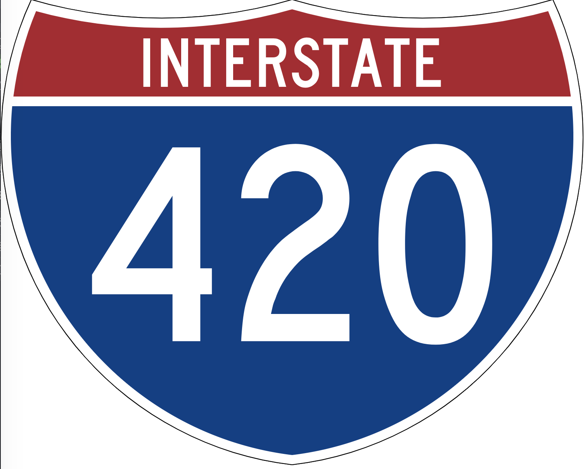
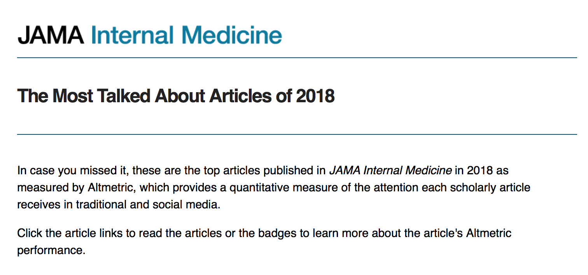
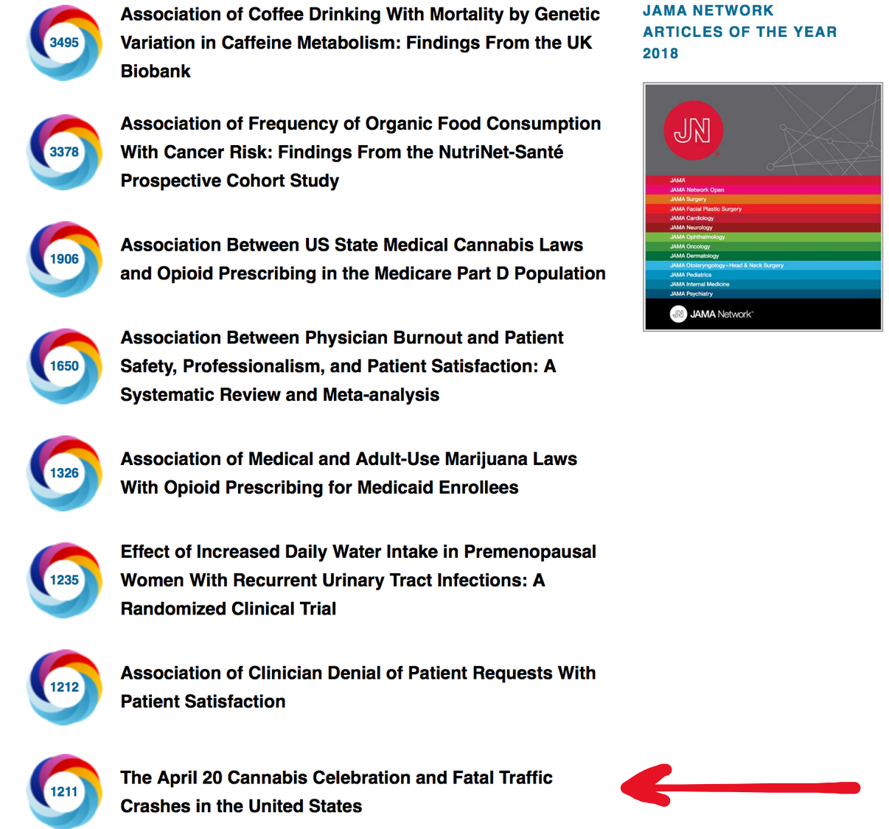
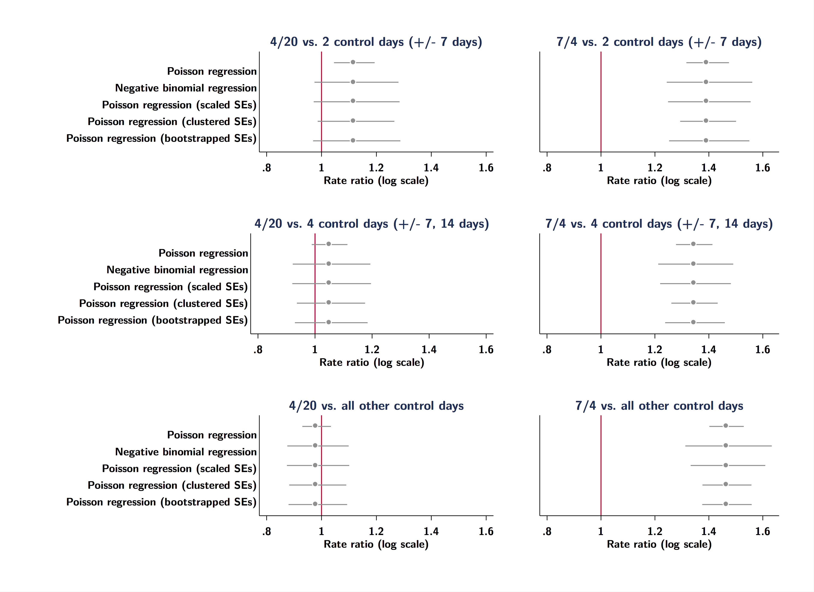
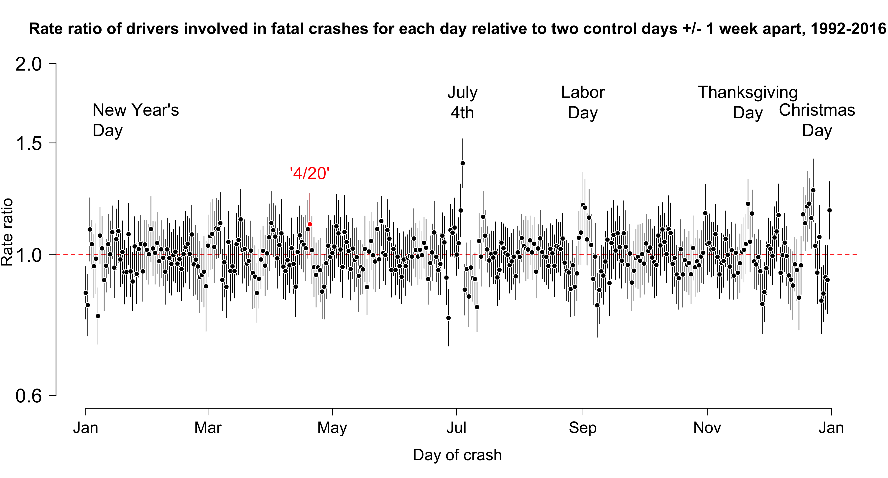
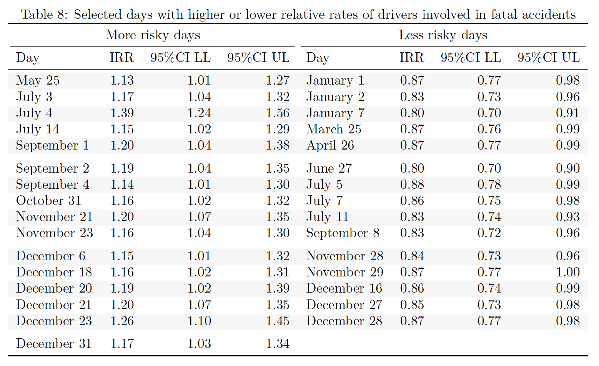
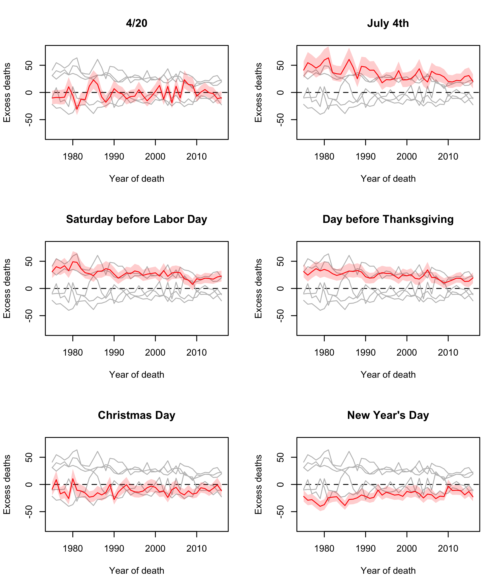

420 update

{kind=link}
Background
Last fall Adam Palayew and I wrote about an interesting paper that claimed that the number of people in fatal traffic crashes increased by 12% on April the 20th. For those that don’t know, April 20th (or ‘420’) is a day of celebration of all things cannabis, with large outdoor gatherings where cannabis consumption is promoted, especially at 4:20pm. The idea behind the paper was that excess consumption of cannabis on April 20th led to more drugged driving, and therefore more fatal accidents.
It’s an interesting and perhaps not implausible idea but, as always, the devil is in the details. The authors, John Staples and Donald Redelmeier used data from the Fatal Accident Accident Reporting System (FARS) and compared drivers involved in fatal accidents on 420 to those involved in accidents one week before and after for the period 1992-2016. This is an interesting design because it inherently compares fatal accidents on the same day of the week, and there is a lot of daily variation in fatal crashes (weekends are particularly deadly).
They reported that the number of drivers involved in fatal accidents was 12% higher on 420 compared to control days. This paper made quite a splash in the media, and was the 8th most talked about article for JAMA Internal Medicine in all of 2018:  
Of course it also was widely discussed on social media and twitter, for example:
And the authors also made some pretty strong claims in a press release:
“Assuming fewer than 10 per cent of Americans drive while high on April 20, our results suggest that drug use at 420 celebrations more than doubles the risk of a fatal crash.”
-Donald Redelmeier, February 12, 2018
This is a serious claim, though one might argue that the use of the relative term “doubling” doesn’t help to quantify how serious the problem might be in the absence of base rates. However, at a time of both liberalization of legislation for recreational marijuana and concern about the impacts of drugged driving, such claims naturally prompted other to look more carefully at the evidence.
Jayson Aydelotte and colleages wrote a letter to the editor at JAMA Internal Medicine specifically interrogating both the validity of considering two days a week before and after as control conditions, and, since 420 has been gaining in popularity, whether any impact might have increased over time.
Disaggregating the control dates provided additional insights. When comparing the number of crashes for each study date over the study period, in some years the number of crashes on April 20 was quite similar to the number of crashes occurring on at least 1 of the control dates. The April 20 crash rate remained significantly higher than the April 13 crash rate (IRR, 1.12; 95% CI, 1.02-1.23) but was not significantly different from the April 27 crash rate (IRR, 1.09; 95%CI, 0.99-1.20).
I’ll leave aside the continued focus on arbitrarily dividing the results into “significant” and “not significant”, which is not helpful, but they argue that April 13 and April 27 do not appear to be ‘equivalent’ control days (let’s be honest, however, that the intervals 1.02-1.23 and 0.99-1.20 are in no way substantively different). They also found weaker effects in more recent years, which is again perhaps at odds with what one would expect if 420 has become more popular.
Update
Adam and I also did our own analysis, which has now been published in the journal Injury Prevention, and we were able to replicate the findings of Staples and Redelmeier, but we also ran some additional sensitivity analyses and tried to put the findings in context of what we already know about “risky” driving days. A few key findings emerged from the paper, and I’ll just post a few figures from the paper to try and make the case.
Control days and uncertainty
First, there is a somewhat arcane technical issue related to how to calculate uncertainty around the estimated increase in fatal accidents that happen on 420 relative to “control” days. Sadly, this is relevant because many prominent journals (including leading medical journals) use filters related to “statistical significance” as a way to highlight “novel” findings. In practice, that means it’s interesting only if p < 0.05,1 and it is perhaps no surprise that the 420 paper found that, “The risk of a fatal crash was significantly higher on April 20 (relative risk, 1.12; 95% CI, 1.05-1.19; P = .001).”
We investigated this by: a) looking at alternative ways of estimating uncertainty; b) adding control days two weeks before/after the index date of 420 or using all other days as the control period; and c) comparing 420 to July 4th (previously shown to demonstrate excess deaths). Here is a figure showing the comparison between 420 and July 4th (left and right panels, respectively), and for different control periods (upper and lower panels, respectively):

The thing to notice here is the greater uncertainty that is evident when one takes a more robust approach to estimating the variance, which may have tipped the paper into the p >0.05 of what Edward Tufte used to call the “zone of boredom, ambiguity, and unpublishability”. But you can also see that expanding the control period to 2 weeks (or the rest of the year) diminshes any impact of 420, but not July 4th, which appears very reliably associated with excess deaths.
Compared to what?
Second, we also tried to look at how the “excess risk” on 420 compares with similar risks on all other days of the year. We basically just ran the same simple negative binomial regression for each day using 2 control days a week apart for each day of the year. The graph below shows the results on the (log) rate ratio scale:

You can see from the figure above that the excess risk on 420 does not seem readily distinguishable from daily variations across the entire year. Some clear risky days stand out (July 4th, for example), but if one applies the same filter as the 420 paper and just looks for days when there are “significant” relative excesses (or deficits) of fatal crashes,2 there are actually a lot of days that need explaining:

I wonder if one just picked random years whether any of these days would be reliably associated with excess deaths? I would gather July 4th but, as it stands, it is hard to find plausible explanations for why some of these days stand out.
Transient or persistent?
Finally, we used a Bayesian hierarchical model and partial pooling across years to evaluate whether any impact of 420 changed over time (this was also partially addressed by the letter from Aydelotte et al.). The plots below show results from models where we allowed the impact of certain “key” dates well-known to be associated with excess fatal crashes (July 4th, Labor Day weekend) to vary over time. Since 420 is a recent phenomenon we wondered whether we could see changes over time (increases?) in excess deaths. What does seem clear is that there is no reliable excess of drivers involved in fatal crashes on 420, but very clear excesses (and deficits) on other days. This speaks to whether one might just argue that the data are too noisy to detect any reliable signal.

A couple of final points. As we mentioned in the other post, there are also important questions about whether, practically speaking, it is plausible that drugged driving on 420 would be serious enough to raise the population-wide rate of fatal accidents by something like 12%. It’s hard to believe, and our back-of-the-envelope calculations suggested that around 15% of the population would need to be driving while high on 420 from 4:20pm to midnight to generate the kinds of excess rates seen in the Staples/Redelmeier paper.
And I should also say that this paper was not an attack on the original work by Staples and Redelmeier. I will cop to seeing the paper and being skeptical about the results, but through the process of trying to reproduce their results, we started to think about new questions that could be asked of the data, what kinds of methods might be necessary to answer a question like this, and in general I think this ended up being a really interesting process of discovery. I should also say that because we decided to make all of the data and code available when we submitted the paper (which was first rejected by the Canadian Medical Association Journal), the review process at Injury Prevention was really productive:
Paper + Data + Code
If anyone is interested in the paper the gated version is now posted on Injury Prevention’s website, but we have posted a preprint on my Open Science Foundation page, and we have made all of the raw data and code available to reproduce our results publicly available as well. Hope you find it interesting!